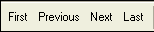
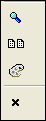

How to Design a Custom Toolbar
To design a custom toolbar:
Activate the Control Panel and display the Code tab.
Click the New button.
Select Toolbar from the New Object genie.
To give you a head start, you can start with one of the standard toolbars, or you can start from scratch with a blank toolbar. Select the toolbar type, then click OK.
Alpha Anywhere opens the Toolbar Editor window and shows the toolbar that you are editing. If you chose to start with an empty toolbar, there will not be any buttons in the Toolbar buttons list. You now can add five types of elements to the toolbar.
Optionally, click Add Pre-defined Button to select from the library of commonly used functions.
If you have not yet defined a context for the toolbar, select one from the Context dialog box.
In the resulting Select Button dialog box, expand the tree control, select a button, and click Add. to add it to the collection of buttons to use.
When you are modifying a Form or Browse toolbar, you will also see the <span class=Screen>Special Toolbar Controls</span> window. Use the Add button to add these controls to the collection of buttons to use.
Optionally, select a button in the Selected Buttons list and click Remove to remove it from the collection.
Click OK to continue or Cancel to discard your inputs.
Optionally, click Add Custom Button to define a button.
Optionally, make a selection from the Before Button list. The options are:
- "No break" - the default places this toolbar element to the right of the previous element and on the same tab.
- "Break" - the toolbar element is placed below, instead of to the right of the previous element on the same tab.
- "Conditional Break (when toolbar undocked)" - the toolbar element is placed on the same tab below, instead of to the right of the previous element, only when the toolbar is undocked. Note : The conditional break behavior is not seen when you preview the toolbar.
- "New Tab" - the toolbar element is place on a new tab.
- "Conditional tab (when toolbar undocked)" - the toolbar element is place on a new tab, only when the toolbar is undocked. Note : The conditional tab behavior is not seen when you preview the toolbar. Refer to Toolbar_Tabs.
- "Unbreakable space" - the toolbar element is placed to the right of the previous element and cannot be separated from the previous element.
If you selected "New Tab" or "Conditional tab (when toolbar undocked)" in step a, enter the Tab Label. Note : By default tabs are set to not display labels. Refer to Toolbar Tabs.
Optionally, make a selection from the Show Button list. The options are:
- "Always"
- "When toolbar docked horizontally or floating"
- "When toolbar docked vertically"
Optionally, make a selection from the Style list. Toolbars can mix different toolbar button styles. The options are:
- "Bitmap"
- "Text"
- "Text-Bitmap"
- "Bitmap-Text"
- "Text over Bitmap"
- "Bitmap over Text"
|
Bitmap only |
|
|
Text only |
 |
|
Bitmap followed by text |
|
|
Text followed by bitmap |
|
|
Text over bitmap |
|
|
Bitmap over text |
Optionally, click Apply to All to give all buttons the same style.
Optionally, click the Toolbar Image to select a different bitmap to display.
Optionally, check Has Pressed Image and click the Pressed Image to select a different bitmap to display.
Optionally, change the default Bubble help text.
Optionally, make a selection in the Button Type list. The options are:
- "Push Button" - the default
- "Two-state Button"
Optionally, enter an expression that defines when the button is enabled in the Enable Expn field. Click
 to use the <span class=Screen>Expression Builder</span> to define this expression.
to use the <span class=Screen>Expression Builder</span> to define this expression.If you selected "Two-state Button" in step 6h, you may enter an expression that defines when the toolbar entry is checked in the Checked Expn field. Click
to use the <span class=Screen>Expression Builder</span> to define this expression.Select a Button Action. The options are:
- "Play Global Script" - select a script from the Script Name list.
- "Run Xbasic" - enter Xbasic commands into the text box.
- "Internal Action"
Repeat step 6 for each of the remaining buttons on your toolbar.
Optionally, click Free-form Xdialog to define a button.
Optionally, make a selection from the Before Xdialog list. The options are:
- "No break" - the default places this toolbar element to the right of the previous element and on the same tab.
- "Break" - the toolbar element is placed below, instead of to the right of the previous element on the same tab.
- "Conditional Break (when toolbar undocked)" - the toolbar element is placed on the same tab below, instead of to the right of the previous element, only when the toolbar is undocked. Note : The conditional break behavior is not seen when you preview the toolbar.
- "New Tab" - the toolbar element is place on a new tab.
- "Conditional tab (when toolbar undocked)" - the toolbar element is place on a new tab, only when the toolbar is undocked. Note : The conditional tab behavior is not seen when you preview the toolbar. Refer to Toolbar_Tabs.
- "Unbreakable space" - the toolbar element is placed to the right of the previous element and cannot be separated from the previous element.
If you selected "New Tab" or "Conditional tab (when toolbar undocked)" in step a, enter the Tab Label. Note : By default tabs are set to not display labels. Refer to Toolbar Tabs.
Optionally, make a selection from the Show Button list. The options are:
- "Always"
- "When toolbar docked horizontally or floating"
- "When toolbar docked vertically"
Click Define Xdialog Code... to display the <span class=Screen>Define Xdialog</span> dialog box.
Repeat step 8 for each of the remaining Xdialog buttons on your toolbar.
Optionally, click Drop-down Button to define a button.
Optionally, make a selection from the Before Button list. The options are:
- "No break" - the default places this toolbar element to the right of the previous element and on the same tab.
- "Break" - the toolbar element is placed below, instead of to the right of the previous element on the same tab.
- "Conditional Break (when toolbar undocked)" - the toolbar element is placed on the same tab below, instead of to the right of the previous element, only when the toolbar is undocked. Note : The conditional break behavior is not seen when you preview the toolbar.
- "New Tab" - the toolbar element is place on a new tab.
- "Conditional tab (when toolbar undocked)" - the toolbar element is place on a new tab, only when the toolbar is undocked. Note : The conditional tab behavior is not seen when you preview the toolbar. Refer to Toolbar_Tabs.
- "Unbreakable space" - the toolbar element is placed to the right of the previous element and cannot be separated from the previous element.
Optionally, make a selection from the Show Button list. The options are:
- "Always"
- "When toolbar docked horizontally or floating"
- "When toolbar docked vertically"
Select the first entry in Drop-down Choices and click Edit Choice to display the Edit Drop-down Menu Item dialog box.
Repeat step 10 for the remaining drop-down buttons on your toolbar.
To place a separator line between two toolbar entries:
Select the toolbar button before the insertion point.
Click Add Separator Line.
To change the location of a button, select it and click
 ,
,  , , or
, , or  to move it up or down (the same as Left
and right).
to move it up or down (the same as Left
and right).To delete a button, select it and click
 .
.To copy a button:
Select it and click
 .
.In the Copy Toolbar Buttons dialog, select Current button or Multiple buttons.
If you selected Multiple buttons, enter the number of buttons to copy, starting with the current button. A negative number sets the number of buttons to copy, ending with the current button.
Click OK to continue.
To paste a button, place the cursor on the button after the insertion point, and click
 .
.
Optionally, change the default definition of the docking behavior of the toolbar. You can inhibit docking entirely by unchecking Toolbar can be docked? You can control which sides of the toolbar will dock by checking or unchecking the Left, Right, Top, and Bottom check boxes.
If docking is enabled, you can select the Initial dock position. The options are:
- "Top"
- "Bottom"
- "Left"
- "Right"
- "Float" - not docked
Optionally, check Toolbar locked? if you do not want the toolbar to be undocked.
Optionally, check Remember toolbar position? if you want it to reload in its last position.
Optionally, select a different Toolbar Background Color.
Optionally, check Use custom toolbar font? and click on the Toolbar Font button to select a different font and/or point size for the toolbar's text.
Optionally, check the Bold, Italic, and Underline check boxes to apply those style attributes to the toolbar's text.
Optionally, select a different border style for toolbar buttons.The options are:
- "Raised"
- "Classic"
- "Modern"
- "System" - the default button style set in the Settings dialog box ( View > Settings > Systems > Preferences > Toolbars ).
|
Raised Style buttons always have a raised 3D border, even when they do not have focus. | |
|
Classic Style buttons have a raised 3D border only when they have focus. | |
|
Modern Style buttons have a colored background and border when they have focus (this style is consistent with Windows XP). If you select the Modern toolbar style, you can select different button background colors and border styles. |
Optionally, input a Toolbar Title.
Optionally, click Setup Xbasic to input any Xbasic code to be executed before the toolbar is displayed.
Optionally, click Show Xbasic to see the code that will be run to display the toolbar. Caution : This Xbasic code is incomplete. It contains symbolic references that have not yet been resolved.
Click Show Toolbar String to see the finished Xbasic and Xdialog code that will display the toolbar. You can copy and re-use the code in the Full String tab.
Toolbar tabs can be mini tabs, or regular tabs with text. The tabs can be above or below the toolbar. When the toolbar is docked vertically, the tabs can be on the left or the right of the toolbar. If the toolbar uses tabs with text, when the toolbar is docked vertically, the text on the toolbar also appears vertically.
The tab breaks in the toolbar can be conditioned on the toolbar docking state. For example, you can design a toolbar that is "flat" when docked horizontally or vertically, but that is separated into tabs when the toolbar is floating.
|
Toolbar with mini-tabs. | |
|
Toolbar with regular tabs, and text on the tabs. Picture |
{kind=link}
Uncheck Use mini-tabs if you would like tab labels to appear.
Optionally, change where tabs will appear from Above toolbar to Below toolbar.
Optionally, change where tabs will appear from Left side to Right side.
Use the Preview Toolbar button to display the toolbar. Note : Xbasic and Xdialog code is not run in preview mode, so all toolbar characteristics may not be displayed.
Edit Drop-down Menu Item Dialog Box
A drop-down menu is a list of choices associated with
an icon (without text) on the toolbar. The icon used is the icon used
by the first choice entry. The  button to its right displays
the choices.
button to its right displays
the choices.
Optionally, click Select built-in action to add use a pre-defined button. See Pre_defined_Buttons for detailed instructions.
Select an Action type. The options are:
- "Play Global Script"
- "Run Xbasic"
- "Internal Action" - reserved for internal use
Optionally, click the Image button to select another image from the <span class=Screen>Insert Image</span> dialog box.
Optionally, define the Menu text for this choice.
Optionally, define the Bubble help for this choice.
Optionally, define the Enable expn for this choice. By default, the choice is enabled at all times. The expression must evaluate to a logical value. The choice will be enabled when the expression evaluates to TRUE.
If you selected "Play Global Script" in step 2, select a script from the Script name list.
If you selected "Run Xbasic" in step 2, enter the Xbasic code below. Click
 to display a larger window.
to display a larger window.Repeat steps 1 through 9 for the other choices associated with this Drop-down button.
Define Xdialog Dialog Box
Advanced users can create "free form" buttons, which can contain Xdialog code. A "free-form" button is really more like a "free-form region" on the toolbar, since it is not limited to a button - it can contain text boxes, list boxes, radio buttons, images, text etc. Here is an example of a toolbar with three "free-form" buttons, one of which is a clock.
The Define Xdialog dialog box provides a structured interface for creating dialog boxes to use as button entries on your toolbar. The Xdialog Body tab contains the text and control(s) that you want to display.
The Define Xdialog Event tab contains the event code that responds to user input.
The Define Xdialog Initialization Event tab contains the code that runs when the toolbar is instantiated.
The Define Xdialog Setup Code tab prepares variables.
The result looks something like this.
Dynamic Replacement of Xdialog Buttons
It is possible to define the Xdialog button to display an embedded modeless dialog box, which is created by a separate function. as a result, the toolbar display code is separated from what it displays. For example, the following code creates a modeless dialog box with an embedded browser.
|
FUNCTION create_window as C (title as C ) DIM a as P dim a.object as P dim a.class as C a.class = "shell.explorer" DIM SHARED varC_result as C DIM a_url as C a_url ="www.alphasoftware.com" varC_result = ui_modeless_dlg_box(title,<<%dlg% {startup=init} {region} | {activex=40,20a?.t.}; {endregion}; {line=1,0}; {region} {endregion}; %dlg%,<<%code% IF a_dlg_button = "init" THEN a_dlg_button = "" hourglass_cursor(.t.) IF a_url <> "" THEN on error goto a_error a.object.navigate2(a_url) on error goto 0 END IF hourglass_cursor(.f.) END IF end a_error: ui_msg_box("Error","Invalid URL.",UI_STOP_SYMBOL) end %code%) END FUNCTION |
The following code in the Initialization Event tab calls the create_window() function above.
|
create_window("ChildDialog") |
Then the following code in the Xdialog Body tab displays the results.
|
URL of the Day:|{embedded=40,20:ChildDialog}; |
The result is something like this.
Toolbar buttons can be conditional, depending on how the toolbar is docked. For example, you might design a toolbar button to have a bitmap followed by text when it is horizontal, and to have just a bitmap when it is vertical. You might do this to prevent the vertical toolbar from being too wide.
|
A section of the Print Preview toolbar showing a bitmap-text button (Exit Preview). | |
|
 |
A section of the Print Preview toolbar showing only bitmaps when the toolbar is vertical. |
Toolbars can be multi-lined. Line breaks can be conditional, based on the toolbar docking state. For example, you might make the toolbar single-lined when docked vertically or horizontally, but two-lined when floating.
A two-lined toolbar.
When you customize a form or browse toolbar you can add a button for any of the menu options available on the form or browse menu. You can also choose from the list of Special Toolbar Controls.
Open the database Control Panel and display the Code tab.
Select New > Toolbar from the menu. The New Toolbar Genie appears.
Select the "Form View Toolbar", and click OK.
Under Toolbar Button options, select to add a pre-defined button. The Select Button dialog appears.
Below the Available Command Buttons pane is the list of Special Toolbar Controls.
Special Toolbar Controls provide more functionality than a standard toolbar button. Alpha Five comes with several built-in Special Controls and it is possible for developers and third-parties to add their own.
Examples of some Alpha Special Controls are shown in the following toolbar:
The first control is an Index Selector. It lets you select the primary index/query from a drop-down list.
The second is the Find by Key control. It lets you perform a Find by Key operation without having to open the Find by Key dialog. You can click on the key icon to view or change the key value by which you are searching.
The third is the Run Saved Query control. It lets you run any Saved Query by selecting it from the drop-down list.
Record Number Selector
The Record Number Selector control shows the current record number. You type a record number into the control, press Enter, and Alpha Five selects the record, which is much more convenient than opening the Find by Key dialog box, and setting the primary index to record number.
See Also
Xbasic Script Context, Toolbar Functions and Methods